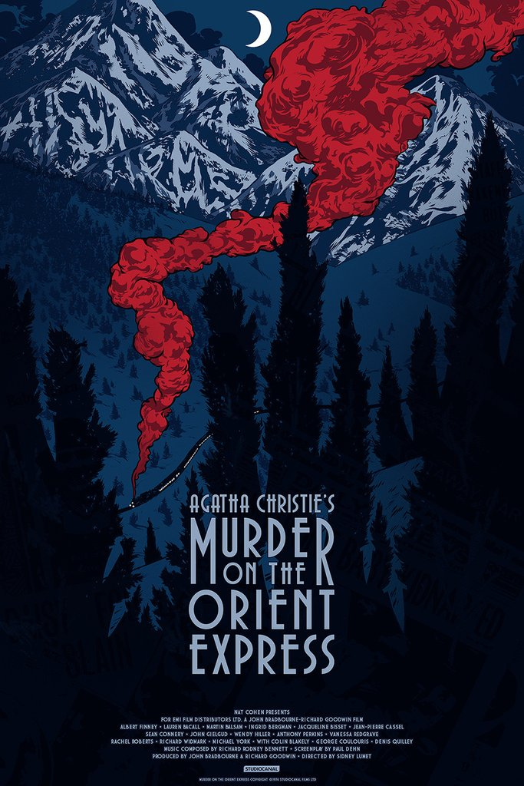

Murder on the Orient Express
By:Agatha Christie
 Hercule Poirot, private detective and retired Belgian police
officer, boards the Taurus Express train to Stamboul (Istanbul). On the train there are two other passengers, Mary Debenham
and Colonel Arbuthnot. The two act as if they are strangers, but Poirot observes behavior that suggests that they are not.
Poirot is suspicious of the couple. The train arrives in Stamboul and Poirot checks in at the Tokatlian Hotel. As soon as Poirot
arrives he receives a telegram summoning him back to London. While waiting at the hotel for the next train, Poirot bumps into an old friend, M. Bouc, head of the Wagon Lit.
M. Bouc arranges a space for Poirot on the Orient Express. In the dining room of the Tokatlian Hotel, Poirot first spots Ratchett and Hector McQueen eating dinner. Poirot know
that Ratchett is an evil man and he describes him to M. Bouc as an animal.